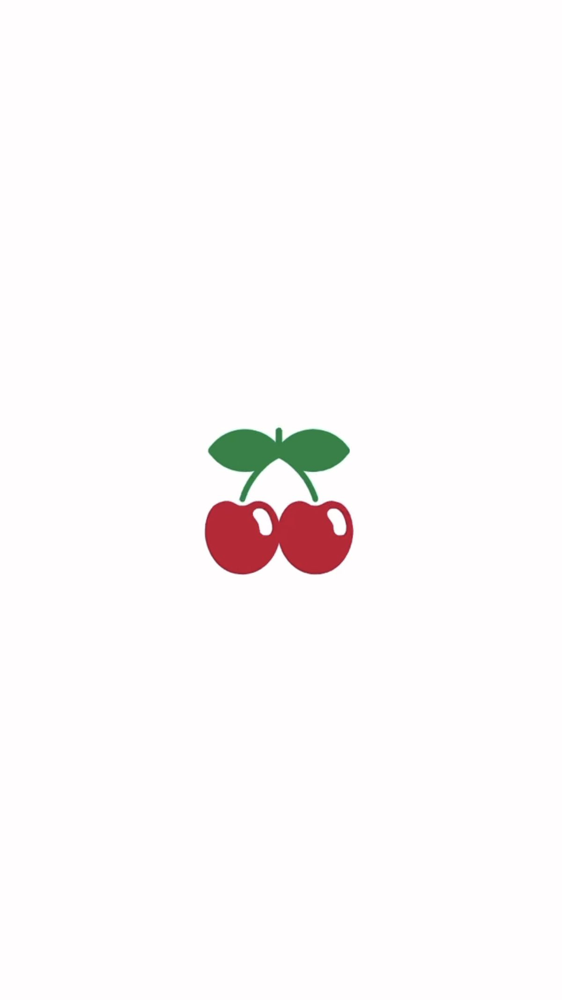

🍒 FUKU 🍒 FUKU 🍒 FUKU 🍒 FUKU 🍒
福岡九州 5日極致之旅
🍒 FUKU 🍒 FUKU 🍒 FUKU 🍒 FUKU 🍒
1
10/24
(六)
2
10/25
(日)
3
10/26
(一)
4
10/27
(二)
5
10/28
(三)
DAY 1 ‧ 博多與小倉探索
2026/10/24
10:40
✈️
福岡國際機場
搭計程車到博多車站
12:24
🍜
Shin-Shin 博多拉麵 KITTE店
停留 00時30分
13:25
🛍️
購物中心KITTE
寄放行李TABINAKA
14:02
🎫
博多車站 新幹線中央口 綠色窗口
買新幹線的票到小倉
14:16
🚉
博多車站 ➔ Kokura Station
山陽新幹線 Sakura 550號
14:40
🛍️
AMU PLAZA 小倉
Traditional Weatherwear 3F
15:28
🏨
小倉麗嘉皇家酒店
16:08
🚉
Kokura Station ➔ Yahata Station
鹿兒島本線 快速 / 2號月台發車
18:05
🌃
皿倉山展望台
(上山) 17:05 八幡站 → 17:45 觀景台
(下山) 18:25 觀景台 → 19:05 八幡站
19:17
🚉
Yahata Station ➔ Kokura Station
鹿兒島本線 快速
19:51
🍗
肯德基
停留 00時30分
20:27
🍜
資先生烏龍麵魚町店
停留 01時00分
21:30
🐧
唐吉軻德 Kokura Uomachi
必買清單在右上角
22:47
🏨
小倉麗嘉皇家酒店
DAY 2 ‧ 小倉老街與前往湯布院
2026/10/25
09:00
🏨
小倉麗嘉皇家酒店
先寄行李在小倉車站車站附近找LUUP
09:46
⛩️
八坂神社
小倉城庭院在旁邊可以逛逛
10:17
🛍️
小倉中央商店街
停留 00時20分
10:45
🐟
旦過市場
停留 00時25分
11:19
🍵
辻利茶舗 京町本店
停留 00時30分
11:52
🧁
奶油小蛋糕 Shiroya 小倉店
停留 00時15分
12:10
🚆
Kokura 小倉車站 ➔ Oita 大分車站
建議提前至月台搭乘
13:50
🛍️
AMU PLAZA 大分
停留 01時00分
14:58
🚆
Oita 大分 ➔ Yufuin 由布院
🌲 JR 特急 由布院之森 ‧ 建議提前至月台搭乘
15:56
🏡
由布院別邸 樹 (獨棟Villa)
16:36
🏡
湯布院花卉村
停留 01時00分
17:45
🛒
A-COOP超市 湯布院店
18:18
🏪
7-11 Yufuin Yunotsubo
18:57
🏡
由布院別邸 樹
預約明天早上的計程車8:15出發/離開前釜心飯的便當11:50
DAY 3 ‧ 動物園與湯之坪美食散策
2026/10/26
07:30
🏡
由布院別邸 樹
吃完早餐馬上要去坐計程車
08:57
🦁
九州自然動物園
門票大人叢林列車大人
11:39
🚌
九州叢林列車 Jungle bus
全程大概1小時
13:08
🏡
由布院別邸 樹
稍作休息以後再出門逛逛
14:15
🍰
蛋糕卷 B SPEAK 本店
停留 00時20分
14:25
🍹
湯布院Mana Mana
停留 00時20分
14:35
🌰
Donguri No Mori (橡子共和國)
停留 00時20分
14:55
🍩
布丁.甜甜圈 Milch Donut&Cafe
停留 00時20分
15:10
☕
鞠智 cucuchi（銅鑼燒和咖啡館）
停留 00時20分
15:25
🍦
telato 抹茶ジェラート専門店
停留 00時20分
15:40
🍋
レモネード&スイーツlimo
停留 00時20分
15:50
🥔
金賞可樂餅 本店
停留 00時20分
16:00
🌶️
調味料 湯布院薬味家
停留 00時10分
16:10
🎁
名產店 GOEMON
停留 00時10分
16:20
🍮
烏骨雞蛋布丁 五衛門
16:30
🐙
大章魚燒 ばくだん焼本舗
停留 00時20分
16:45
🍗
中津からあげ吉吾 湯布院店
停留 00時20分
17:00
🌾
湯布院長壽畑湯之坪店
停留 00時10分
17:10
🍦
由布院霜淇淋
17:20
🥤
GABUGABU
停留 00時20分
17:30
🎁
Souvenir Gallery YUFUIN
停留 00時10分
17:45
🐰
Miffy森之廚房
停留 00時10分
18:00
🍫
SNOOPYChocolat 由布院店
停留 00時10分
18:15
🥢
箸屋一膳／金鱗湖店
停留 00時10分
18:30
🧂
鍵屋 柚子胡椒
停留 00時10分
18:45
🍄
湯布院shiitakemonster
停留 00時20分
DAY 4 ‧ 返博多與天神購物狂歡
2026/10/27
08:00
🏡
由布院別邸 樹
10:57
🍱
由布釜飯 「心」湯布院站前店
停留 00時15分
11:08
🧳
名產店 日乃新
停留 00時10分
11:19
🚆
由布院 ➔ 博多 (由布院之森)
🌲 JR 特急 由布院之森 ‧ 1號月台發車
14:22
🛍️
購物中心KITTE
停留 00時10分
14:36
🛍️
AMU PLAZA博多
停留 01時00分
15:39
🛍️
MING
停留 01時00分
16:58
🏨
福岡休雷蓋特酒店
17:32
🥖
Full full
停留 00時30分
18:11
🏬
Iwataya Main Store
停留 01時15分
19:33
🏬
大丸 福岡天神店
停留 01時00分
20:41
🏨
福岡休雷蓋特酒店
21:31
🍰
Itookashi
停留 01時00分
22:58
🐧
唐吉訶德 福岡天神本店
停留 01時00分
00:07
🏨
福岡休雷蓋特酒店
DAY 5 ‧ 天神商圈與滿載而歸
2026/10/28
09:00
🏨
福岡休雷蓋特酒店
10:03
🏬
福岡PARCO
停留 01時00分
11:03
🍜
麵屋兼虎 福岡PARCO店
停留 00時40分
11:48
🛍️
Mina 天神
停留 01時00分
12:53
🛍️
天神地下街
停留 01時20分
14:32
⛩️
櫛田神社
停留 00時30分
15:24
🥖
Full full
停留 00時30分
16:00
🥩
焼肉ホルモン山翔
停留 01時30分
17:38
🏨
福岡休雷蓋特酒店
17:54
✈️
福岡國際機場
停留 01時00分
⏱️ 備用時刻表
✕
關閉視窗